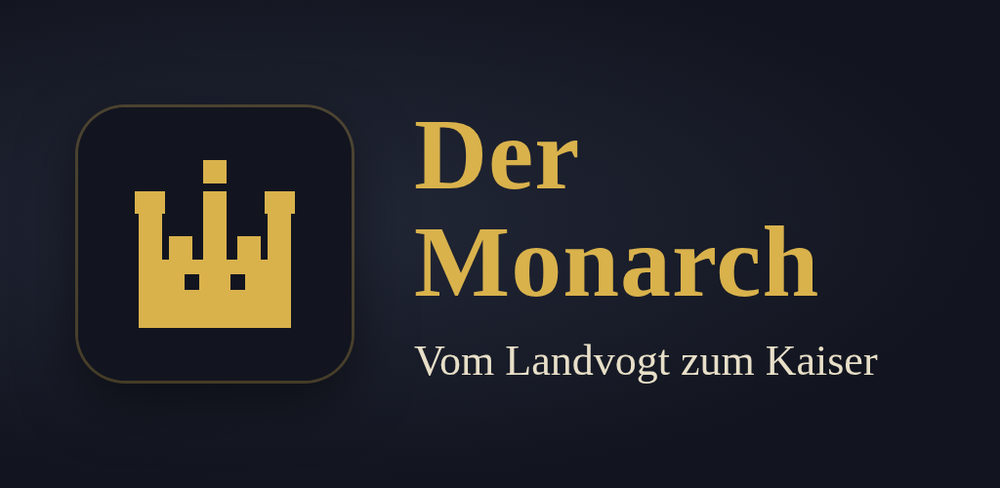
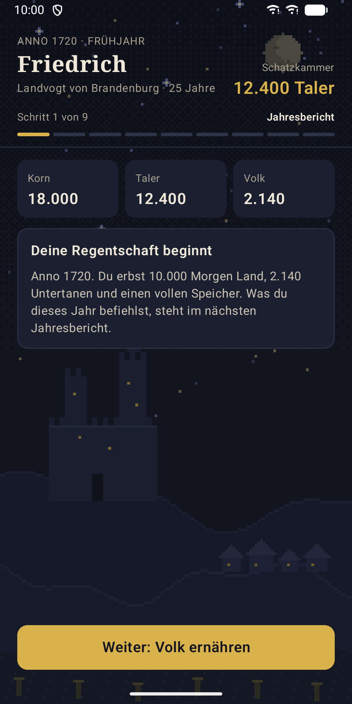
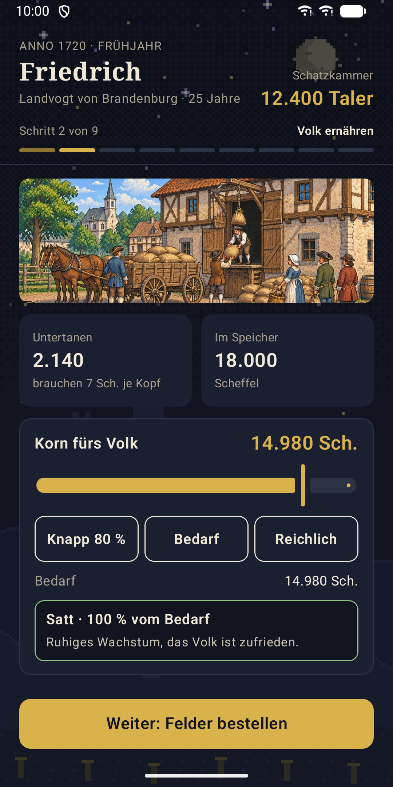
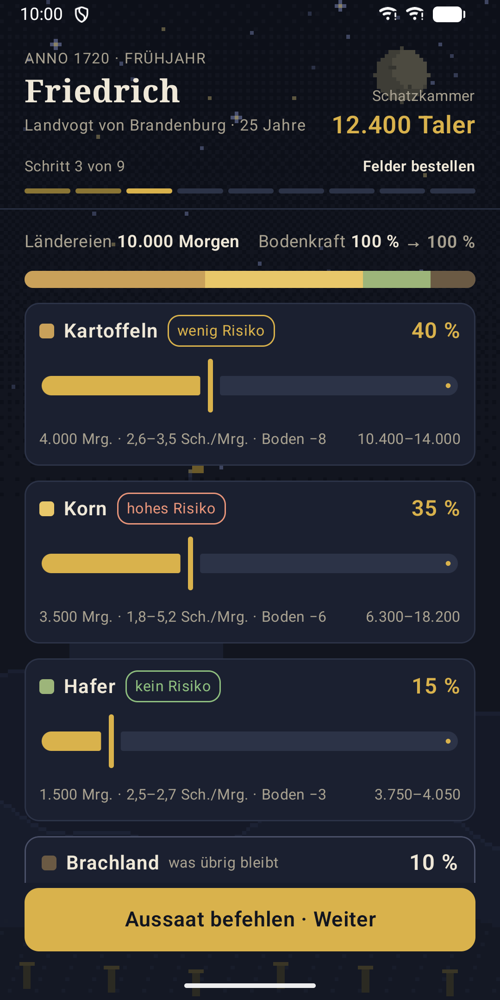
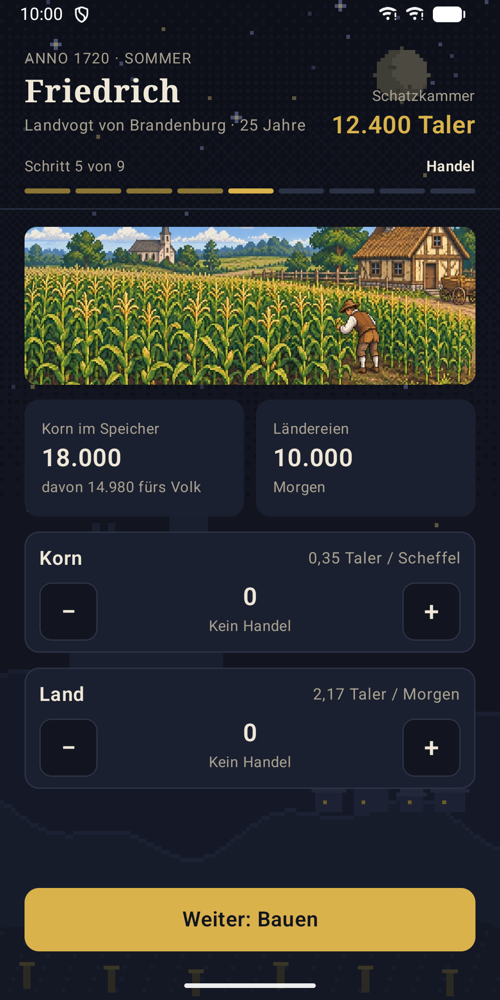
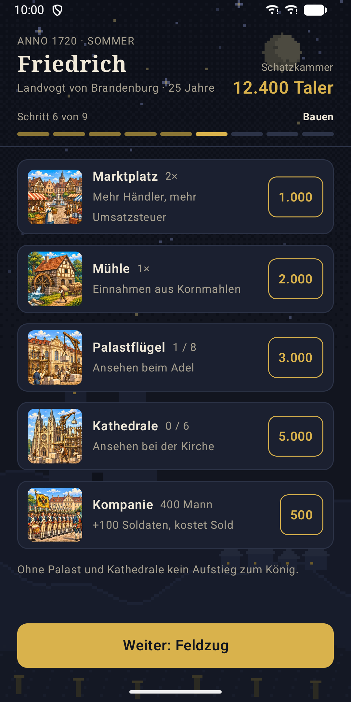
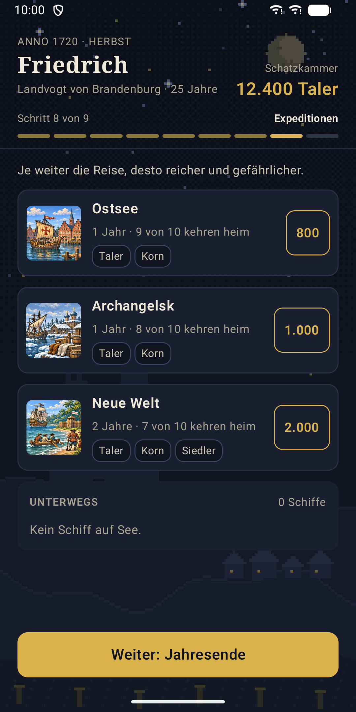
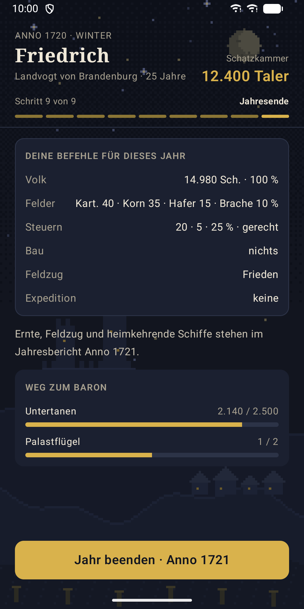

Der Monarch
Rundenbasierte Wirtschaftsstrategie ab 1720: vom Landvogt zum Kaiser aufsteigen.









Über die App
Der Monarch ist ein rundenbasiertes Wirtschafts-Strategiespiel im 18. Jahrhundert. Man schreibt Anno 1720, und du regierst als einfacher Landvogt ein kleines deutsches Reich. Bis 1760 willst du die Kaiserkrone tragen. Jedes Jahr hat neun Schritte: - Jahresbericht lesen: Ernte, Geld, Volk, Ereignisse und Schlachten. - Das Volk ernähren. Zu wenig Korn, und die Menschen hungern oder ziehen fort. Reichlich Korn lockt Siedler aus dem Ausland. - Felder mit Kartoffeln, Korn und Hafer bestellen oder brach liegen lassen, damit sich der Boden erholt. - Zoll, Umsatzsteuer und Einkommensteuer festlegen und bestimmen, wie streng deine Gerichte urteilen. - Korn und Land zu den Preisen dieses Jahres kaufen und verkaufen. - Marktplätze, Mühlen, Palastflügel und Kathedralenteile bauen oder neue Kompanien aufstellen. - Gegen einen neutralen Nachbarn oder einen anderen Herrscher ins Feld ziehen – oder Frieden halten. - Schiffe auf Seerouten von der Nordsee bis nach China schicken. Manche kehren reich beladen mit Gold, Korn oder Siedlern heim. Manche nie. - Das Jahr beenden und sehen, was deine Befehle gebracht haben. Steige auf vom Landvogt zum Baron, Graf, Fürst, Herzog, König und schließlich Kaiser. Jeder Rang verlangt genug Untertanen, Land, Palast, Kathedrale und Marktplätze. Doch die Zeit drängt: Dein Herrscher altert, und ab 60 kann jedes Jahr das letzte sein. Spiele allein oder mit bis zu vier Herrschern auf einem Gerät und reicht es reihum weiter. Brandenburg, Bayern, Sachsen und Württemberg ringen um die Krone. Ein Übergabebildschirm schützt jeden Zug, eine Rangliste zeigt, wer vorn liegt. Drei Schwierigkeitsstufen bestimmen, wie gut die Ernten ausfallen und wie viel Korn die Mäuse fressen. Außerdem: - Automatisches Speichern nach jedem Zug, jederzeit weiterspielen. - Handgezeichnete Bilder und 8-Bit-Klänge, Ton abschaltbar. - Helles und dunkles Design nach Systemeinstellung. - Für Smartphones und Tablets. - Startbildschirm-Widget: wer am Zug ist, Jahr, Rang, Taler und Untertanen. Keine Werbung, keine In-App-Käufe, kein Konto, kein Internetzugriff, keine Datenerfassung. Dein Spielstand bleibt auf deinem Gerät.